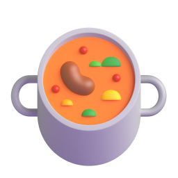
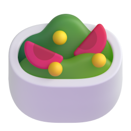
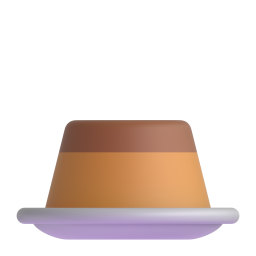

14:32
signal_cellular_alt
wifi
battery_5_bar
close
3/5

Dahl corail coco
Photo et nom ajoutés
edit
Étape 3 sur 5
C'est quel type de plat ?
Entrée

check
Plat
Dessert

arrow_downward
Ensuite : régime, ustensiles, puis ingrédients
Retour
Continuer
arrow_forward